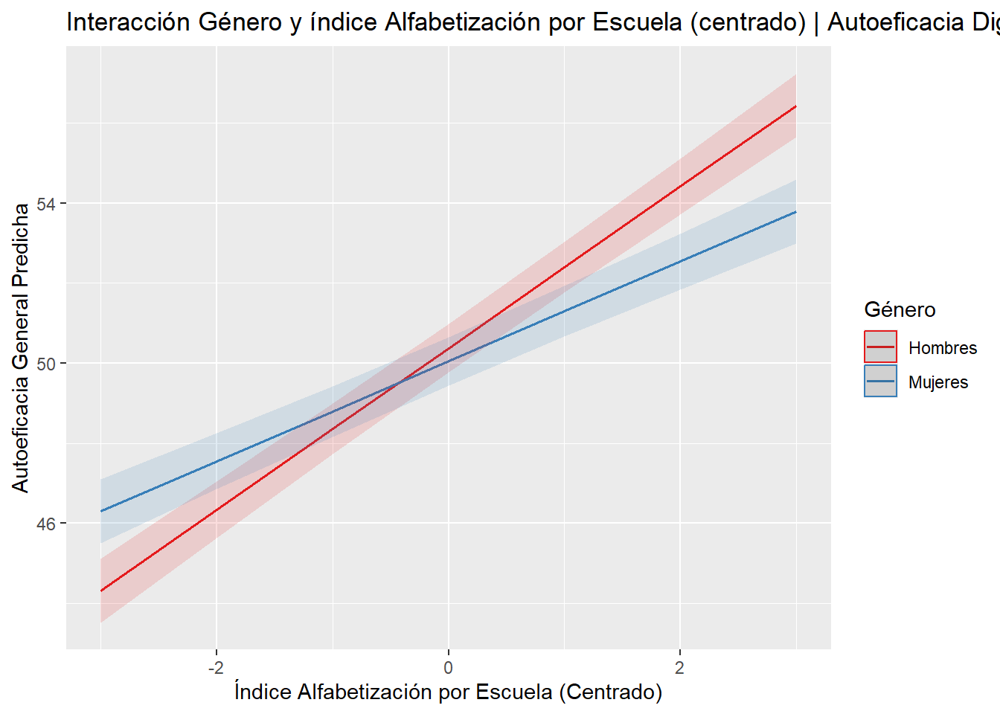
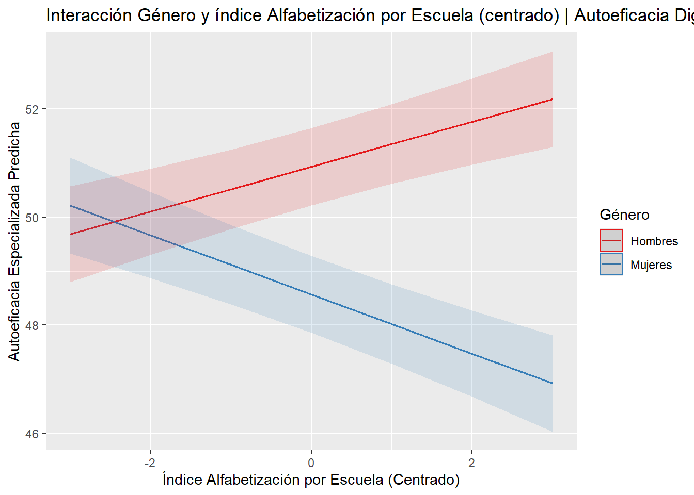
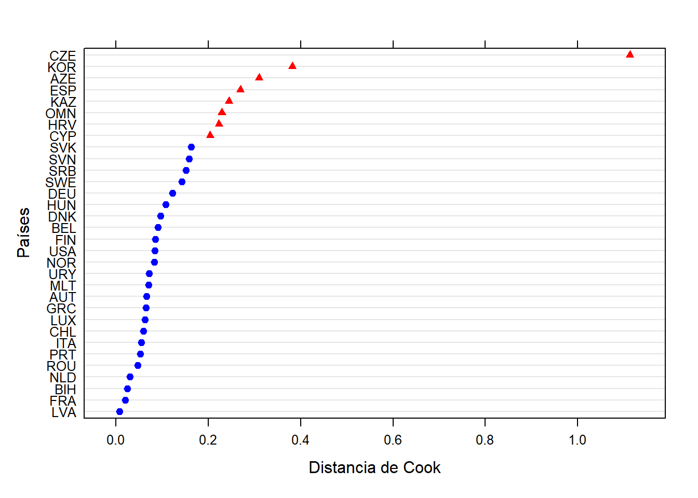
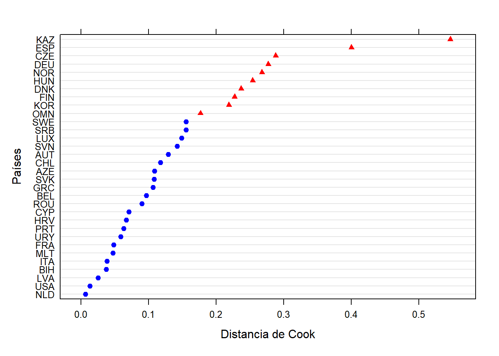

Call:
lm(formula = S_GENEFF ~ homelit_sch_cmc + cil_sch_cmc + desktops_cmc +
tablets_cmc + idi_gmc + S_SEX + homelit_cmc, data = datos_limpios)
Residuals:
Min 1Q Median 3Q Max
-42.200 -6.303 -1.489 5.089 29.075
Coefficients:
Estimate Std. Error t value Pr(>|t|)
(Intercept) 50.2599357 0.0415093 1210.812 < 0.0000000000000002 ***
homelit_sch_cmc 0.6423281 0.0682855 9.407 < 0.0000000000000002 ***
cil_sch_cmc 0.0188662 0.0008013 23.544 < 0.0000000000000002 ***
desktops_cmc 1.1072527 0.0371303 29.821 < 0.0000000000000002 ***
tablets_cmc 0.4053537 0.0296275 13.682 < 0.0000000000000002 ***
idi_gmc -0.1202106 0.0074095 -16.224 < 0.0000000000000002 ***
S_SEX -0.3413137 0.0587523 -5.809 0.00000000629 ***
homelit_cmc 0.6991520 0.0266215 26.263 < 0.0000000000000002 ***
---
Signif. codes: 0 '***' 0.001 '**' 0.01 '*' 0.05 '.' 0.1 ' ' 1
Residual standard error: 9.68 on 109258 degrees of freedom
Multiple R-squared: 0.03705, Adjusted R-squared: 0.03699
F-statistic: 600.5 on 7 and 109258 DF, p-value: < 0.00000000000000022Abstract
El presente estudio busca determinar el efecto que el acceso a Tecnologías de la Información y Comunicación (TIC) en el hogar y la alfabetización escolar tienen sobre la autoeficacia digital de estudiantes de octavo año a lo largo de 32 países. Se entiende por autoeficacia digital la actitud que una persona tiene respecto de su habilidad para desempeñarse competentemente en circunstancias relativas a TIC que no domina. Para responder a este objetivo, se utilizan modelos multinivel usando datos de ICILS 2023. Se usó la escuela y el país como variables de anidación. Las variables dependientes son autoeficacia digital general y autoeficacia digital especializada; las variables independientes son la cantidad de aparatos digitales usados en el hogar y el sexo (nivel 1), el promedio de alfabetización del hogar por escuela (nivel 2) y el Índice de Desarrollo de las TIC (IDI) del país (nivel 3), y se incluye como variable de control la alfabetización del hogar de los estudiantes. Los resultados señalan que solo una pequeña porción de la varianza de la autoeficacia digital se asocia a la escuela y el país (alrededor del 8%). Sin embargo, el acceso a computadoras presenta un efecto significativo en la autoeficacia digital, y este efecto varía entre escuelas y países. Adicionalmente, se descubrió que el efecto del promedio escolar de alfabetización del hogar en la autoeficacia digital especializada es positivo en el caso de los niños, pero perjudica a las niñas; y el desarrollo tecnológico del país tiene un efecto negativo en la autoeficacia digital de los estudiantes. Se concluye que existe una brecha de género en la autoeficacia digital que crece con mejores entornos educativos, y que el acceso a TIC es una variable importante para predecir la autoeficacia digital.
Introducción
En los últimos años hemos sido testigos de una digitalización acelerada. Las Tecnologías de la Información y la Comunicación (TIC) crecientemente se han apoderado de espacios cómo el Estado, el trabajo y la educación, por ende las habilidades informáticas se han transformado en un componente esencial de la participación ciudadana, el desarrollo profesional y la inclusión social (UNESCO, 2018). Tanto en el trabajo como en la vida cotidiana, el uso de TIC se hace cada vez menos una opción, y más una necesidad. La capacidad de buscar información en línea, comunicarse de manera efectiva por medios virtuales, resolver problemas técnicos o interactuar con plataformas web son habilidades que estructuran oportunidades en casi todos los ámbitos de la vida (Van Deursen & Van Dijk, 2011).
La literatura ha documentado que la participación ciudadana en democracias digitales requiere conocimientos y habilidades para acceder a información confiable, interactuar con servicios gubernamentales en línea y ejercer derechos a través de plataformas digitales (Van Dijk, 2020). Estas habilidades forman parte de la denominada alfabetización digital, la cual es considerada una condición previa para la inclusión social y la equidad en entornos altamente digitalizados, que están en crecimiento exponencial (Livingstone & Helsper, 2007).
En este marco cobra relevancia el estudio de la autoeficacia, un concepto desarrollado por Bandura (1995), que describe la actitud de un individuo hacia sus capacidades frente a un potencial evento futuro. Una persona autoeficaz (o, más precisamente, con un alto nivel de autoeficacia) es aquella que se considera capaz de reorganizar sus habilidades para masterizar un atributo que no domina en el momento; es decir, es la percepción que una persona tiene sobre su habilidad para desempeñarse competentemente en entornos que no domina. En contextos digitalizados, se entiende por una alta autoeficacia digital una actitud que no sólo facilita el uso autónomo de la tecnología, sino que también promueve el aprendizaje continuo en un entorno tecnológico que está en constante cambio (Ulfert-Blank & Schmidt, 2022). De esta manera, la autoeficacia digital se entiende como una variable multidimensional que articula creencias personales con el desempeño en tareas tecnológicas especializadas (Eastin & LaRose, 2000).
Pese a que se ha avanzado en el acceso a dispositivos y conectividad, persisten desigualdades estructurales que condicionan las oportunidades de desarrollo digital de los jóvenes. Estudios previos han demostrado que el acceso regular a dispositivos digitales en el hogar, la disponibilidad de conectividad de calidad y la presencia de infraestructura tecnológica en las escuelas tienen efectos significativos sobre las actitudes de los estudiantes respecto a su competencia digital (Fraillon et al., 2020).
En la dimensión educativa, la autoeficacia digital toma importancia al relacionarse con la disposición de los estudiantes para interactuar con las TIC, así como también con la capacidad de apropiarse de ellas como posibles herramientas de aprendizaje (Hatlevik et al., 2018). En este marco, estudiar la autoeficacia de los estudiantes se vuelve muy relevante, en tanto permite reflejar una disposición individual de reflexividad respecto a la tecnología. La teoría reciente sobre la brecha digital ha evidenciado que el acceso desigual a la tecnología genera efectos acumulativos en el desempeño académico, las trayectorias educativas y la inclusión laboral (Lythreatis et al., 2022). De ese modo, la autoeficacia puede ser comprendida como un mecanismo que intermedia entre el acceso material a la tecnología y su uso significativo, y por tanto, como un indicador de las oportunidades reales de los jóvenes para participar en la sociedad digital y obtener resultados en la sociedad (Gran et al., 2021). En base a lo anterior, podemos decir que estudiar el cruce entre el acceso a la tecnología, como variable estructural, y la autoeficacia digital se hace relevante en la medida que permite plantear nuevas interrogantes respecto a esta relación.
Es desde este lugar que el presente estudio ahonda en la comprensión de cómo el acceso a TIC y la alfabetización digital influye en los niveles de autoeficacia digital general y especializada de los estudiantes. Para ello, se vale de una metodología multinivel, que permite distinguir analíticamente tres dimensiones del fenómeno estudiado: una primera dimensión a nivel individual (de hogar), una a nivel escuela y una a nivel país. Estos tres niveles de análisis, en cierta forma dimensiones de la socialización de los estudiantes, interactúan de forma diferente con la variable dependiente del estudio, la autoeficacia digital.
A nivel individual, se utilizará como variable de acceso la tenencia de computadoras y tablets en el hogar. En el nivel escuela, se medirá la influencia del promedio escolar de alfabetización del hogar de los estudiantes, como una variable que indica el nivel socioeconómico y cultural de la escuela. A nivel país, por el otro lado, se busca medir el efecto de las diferencias en la infraestructura TIC de los diferentes territorios, a través del Indice de Desarrollo de TIC (IDI por sus siglas en inglés). En el caso del hogar y el país, se busca evaluar el efecto del acceso a TIC, mientras que en la escuela se mide la alfabetización.
Problema de investigación
Las disparidades en el acceso a dispositivos digitales son un factor de importancia para comprender las diferencias en la autoeficacia digital de los jóvenes. Como señala Bandura (1995), parte de la producción de una actitud autoeficaz se explica por las experiencias vicarias,: ver a personas “como uno” desarrollar exitosamente una habilidad a través del esfuerzo lleva a creer que uno también puede dominarla. En congruencia, la literatura apunta a una relación positiva entre acceso a TIC y autoeficacia digital, como identifica Stone (2020), en dominios tales como la computación básica, el uso de internet y la creación de contenido. Otros estudios que han identificado esta relación fueron sistematizados en Senkbeil (2023).
La literatura también señala que, así como el acceso a TIC, el género, la escuela y el país son variables frecuentemente utilizadas en el estudio de la autoeficacia digital. Para género, esto se atribuye a las diferencias entre hombres y mujeres que favorece la relación positiva de los primeros con la tecnología, demostrando una mayor autoeficacia digital y más actitudes positivas en relación a las TIC (Cai et al., 2017). En un estudio más reciente, Gebhardt et al. (2019) no observan diferencias entre hombres y mujeres en cuanto a su autoeficacia digital general, pero sí en su autoeficacia digital especializada, donde los varones sobrepasan significativamente a sus pares femeninos.
En el caso de la escuela, Hatlevik et al., (2018) encontró que la varianza de la autoeficacia explicada por esta variable en ICILS 2013 es baja (menos del 6% en todos los países). Otros estudios también parecen apuntar que la escuela –en tanto contexto y modo de uso de TIC– no es una variable muy relevante en el estudio de la autoeficacia digital, en oposición a otros contextos de uso (Ball et al., 2020; Juhaňák et al., 2019). Por el otro lado, la autoeficacia parece tener un comportamiento heterogéneo si se comparan distintos paises, y dependiendo de las variables que se utilice los efectos pueden ser mayores o menores, como señalan los estudios de Hatlevik et al., (2018) o Cheng & Hu (2020), este último con datos de PISA 2015.
Considerando todo lo anterior, se desprende la siguiente pregunta de investigación: ¿De qué manera el acceso a TIC en el hogar y en el país influyen en la autoeficacia digital de los estudiantes? ¿Que rol cumple la alfabetización escolar en la autoeficacia digital de los estudiantes?
Hipótesis
-
Nivel 1:
- H1: El acceso a computadores y tablets en el hogar tiene un efecto positivo en la autoeficacia digital de los estudiantes.
-
Nivel 2:
H2: El promedio escolar de alfabetización del hogar tiene un efecto positivo en la autoeficacia digital de los estudiantes.
H3: El efecto del promedio escolar de alfabetización del hogar en la autoeficacia digital es moderado por el sexo del estudiante.
-
Nivel 3:
- H4: El IDI (Índice de Desarrollo de TIC) del país tiene un efecto positivo en la autoeficacia digital de los estudiantes.
- H5: El efecto del acceso a computadores en el hogar varía según escuelas y países.
Descripción de los datos
Base de datos
Se usaron datos del International Computer and Information Literacy Study de 2023 (ICILS 2023), una evaluación internacional que recolecta información sobre competencias digitales y contexto escolar en estudiantes de octavo grado de 35 países, y evalúa la alfabetización digital mediante una prueba de aplicación. Esta base incluye datos de 135.615 estudiantes de 5.299 escuelas.
Variables del estudio
Las variables dependientes seleccionadas son autoeficacia general y autoeficacia especializada, ambas construidas por ICILS 2023 con preguntas tipo Likert. La formulación de las preguntas es: “¿En qué medida puedes realizar cada una de estas tareas en un ordenador? / Buscar y encontrar información relevante para un proyecto escolar en Internet”, con opciones de respuesta que van desde “Sé cómo hacerlo” hasta “creo que no podría hacerlo” (Fraillon et al., 2020).
La autoeficacia general se refiere a la percepción del estudiante sobre su capacidad para usar tecnologías de la información de forma cotidiana, sin necesidad de conocimientos avanzados. Se mide a través de 8 preguntas que cubren: editar imágenes, escribir texto académico, buscar información, crear presentaciones multimedia, actualizar perfiles online, copiar imágenes a documentos, instalar programas y juzgar la veracidad de la información en internet (Fraillon et al., 2020). Por otro lado, la autoeficacia especializada evalúa la confianza del estudiante en su habilidad para ejecutar tareas tecnológicas más complejas que requieren conocimientos especializados. Esta variable se construye con 4 preguntas, que incluyen: crear una base de datos, crear/editar una página web, desarrollar un programa y configurar una red local de ordenadores (Fraillon et al., 2020). Ambas variables corresponden a índices desarrollados por ICILS, y se encuentran estandarizadas (con promedio 50 y desviación estándar de 10).
En cuanto a las variables de anidación, a nivel 2 se utilizaron los códigos identificadores de cada escuela y país. Dada la presencia de escuelas con sedes en múltiples países, fue necesario ajustar la variable para asignar una identificación única a cada escuela y evitar la pérdida de casos en este nivel.
A nivel 1, se incluyó el índice de alfabetización del hogar, construido a partir de la cantidad de libros disponibles en el hogar según el estudiante (0, 1-25, 26-100, 101-200 o más de 200). También se consideró el sexo del estudiante (0=hombre, 1=mujer) y la cantidad de ordenadores y tablets disponibles en el hogar según el estudiante (0, 1, 2, 3 o más).
Para el nivel 3, se empleó el Índice de Desarrollo de TIC (IDI), un índice continuo que resume el nivel de desarrollo tecnológico de cada país (ITU, 2023). El IDI se estructura en dos pilares: conectividad universal, que mide la cobertura general de internet y banda ancha, y conectividad significativa, que evalúa formas más específicas de acceso, como el porcentaje de personas con teléfono móvil o el costo de un plan móvil en relación con el PIB (ITU, 2023). Se eliminaron los casos correspondientes a Kosovo y Taiwán puesto que estos paises no tienen IDI. Además, se fusionó Renania del Norte-Westfalia con el resto de Alemania, que en ICILS están separados pues tienen dos sistemas educacionales distintos, debido a que el IDI tiene un solo código identificador para Alemania. En el caso de Bélgica solo se tienen datos de Flandes.
Se centraron las variables individuales a la media escuela y las variables país a la media general. Además, se creó una variable de nivel 2 (escuela) a partir de variables de nivel 1 (individual): el promedio de la alfabetización del hogar por escuela, el cual fue centrado a la media del país.
Descriptivos por nivel
A continuación, se presentan los descriptivos generales de la muestra separados por niveles (individual, escuela y país).
Variables de nivel 1 (individual)
| Overall (N=135615) |
|
|---|---|
|
Nota: Elaborado con datos de ICILS 2023. | |
| Autoeficacia General | |
| Mean (SD) | 49.9 (9.95) |
| Median [Min, Max] | 48.9 [14.3, 71.6] |
| Missing | 10237 (7.5%) |
| Autoeficacia Especializada | |
| Mean (SD) | 49.8 (9.98) |
| Median [Min, Max] | 48.5 [28.9, 71.6] |
| Missing | 12431 (9.2%) |
| Sexo del Estudiante | |
| Boy | 68665 (50.6%) |
| Girl | 66186 (48.8%) |
| Not administered/not scored/score out of range | 0 (0%) |
| Omitted | 0 (0%) |
| Missing | 764 (0.6%) |
| Índice de Literatura en Casa | |
| None or very few (0 - 10 books) | 21282 (15.7%) |
| Enough to fill one shelf (11 - 25 books) | 29876 (22.0%) |
| Enough to fill one bookcase (26 - 100 books) | 37882 (27.9%) |
| Enough to fill two bookcases (101 - 200 books) | 21008 (15.5%) |
| Enough to fill three or more bookcases (more than 200 books) | 22260 (16.4%) |
| Not administered/not scored/score out of range | 0 (0%) |
| Omitted | 0 (0%) |
| Missing | 3307 (2.4%) |
| Número de computadores en Casa | |
| None | 10222 (7.5%) |
| One | 31306 (23.1%) |
| Two | 36832 (27.2%) |
| Three or more | 52014 (38.4%) |
| Not administered or missing by design | 0 (0%) |
| Presented but not answered or invalid | 0 (0%) |
| Missing | 5241 (3.9%) |
| Número de tablets en Casa | |
| None | 27910 (20.6%) |
| One | 36318 (26.8%) |
| Two | 26148 (19.3%) |
| Three or more | 37093 (27.4%) |
| Not administered or missing by design | 0 (0%) |
| Presented but not answered or invalid | 0 (0%) |
| Missing | 8146 (6.0%) |
Se observa que la autoeficacia general y especializada se encuentran normalizadas, con una media de ~50 y una desviación estandar de ~10. Ambas variables presentan una alta cantidad de casos perdidos, con 7.5% en la dimensión general y 9.2% en la especializada.
La variable sexo se encuentra distribuida de forma bastante equitativa entre hombres y mujeres, teniendo los hombres una frecuencia un 1.8% mayor.
El índice de literatura en el hogar se encuentra bastante distribuido entre sus categorías, siendo la más común en la muestra “Suficiente para llenar un librero (27.9%), y presenta una pequeña proporción de NAs (2.4%).
Respecto al acceso a computadores, la disponibilidad es alta. El 38.4% de los estudiantes reporta tener tres o más computadores en casa, siendo esta la categoría más frecuente, mientras que solo un 7.5% no tiene ninguno. El acceso a tablets se encuentra más distribuido, teniendo el 27.4% de los estudiantes cuenta con tres o más tablets en el hogar, pero un 20.6% de los estudiantes no poseen tabletas. Ambas variables poseen un nivel aceptable de casos perdidos (entre 3.9% y 6%).
Variables de nivel 2 (escuela)
| Overall (N=5410) |
|
|---|---|
|
Nota: Elaborado con datos de ICILS 2023. | |
| Promedio de Literatura en Casa por escuela | |
| Mean (SD) | 1.89 (0.655) |
| Median [Min, Max] | 1.90 [0, 4.00] |
| Missing | 8 (0.1%) |
Para la variable de promedio agregado de alfabetización por escuela, se registró una media de 1.89 con una desviación estándar de 0.655. Este valor es idéntico al promedio individual, pero la desviación estándar indica que existe una variabilidad apreciable en los niveles de recursos literarios entre las distintas escuelas. Existen 8 escuelas que no cuentan con esta variable (todos sus integrantes no cuentan con índice de alfabetización del hogar), sin embargo esto solo representa el 0.1% de las escuelas.
Variables de nivel 3 (país)
| Overall (N=34) |
|
|---|---|
|
Nota: Elaborado con datos de IDI 2023. | |
| ICT Development Index (IDI) | |
| Mean (SD) | 89.0 (4.61) |
| Median [Min, Max] | 88.3 [76.6, 96.9] |
| Missing | 2 (5.9%) |
Con respecto al IDI, la media entre los países es de 89.0 (desviación estándar de 4.61). Debido a lo alto del promedio, se justifica especialmente el centrado de variables que se realizó. Cómo se explicó anteriormente, hay dos sistemas educativos que no poseen IDI (Taiwán y República de Kosovo).
Luego del procesamiento y limpieza de casos perdidos (utilizando listwise), la muestra final contiene 109.266 estudiantes agrupados en 5069 escuelas, en 32 países.
Métodos
El presente estudio utiliza un análisis multinivel, debido a una estructura anidada de los datos utilizados (ICILS 2023) y a la naturaleza de nuestro problema de estudio (acceso y condiciones del sujeto y de sus distintos contextos). Se modelarán los tres niveles disponibles en la base de datos, individuos dentro de escuelas agrupadas en países. Para esto, se utiliza el software R, con los paquetes lme4 para estimar los modelos multinivel y influence.ME para diagnosticar casos influyentes.
Se aplicó un enfoque progresivo para el modelado multinivel, ingresando paso a paso variables relevantes del estudio para analizar el impacto de estas. Para ambas dimensiones de la autoeficacia digital, se estimaron los mismos modelos. Para evitar redundancia, se detallarán solo los modelos aplicados a la autoeficacia digital general.
En primer lugar, se realizaron modelos nulos para calcular la correlación intraclase de nuestras dos variables dependientes, la autoeficacia digital general y la autoeficacia digital especializada. La fórmula utilizada fue la siguiente:
\[S\_GENEFF_{ijk} = \gamma_{000} + u_{0jk} + r_{0k} + e_{ijk}\]
\(S\_GENEFF_{ifk}\) es la autoeficacia general del estudiante \(i\) en la escuela \(j\) del país \(k\); \(\gamma_{000}\) es el intercepto fijo; \(u_{0jk}\) es el efecto aleatorio de la escuela \(j\) en el país \(k\); \(r_{0k}\) es el efecto aleatorio del país \(k\) y \(e_{ijk}\) es el error residual del estudiante \(i\). Luego, en base a los resultados de este modelo se calculó la correlación intraclase siguiendo estas fórmulas:
\[ICC_{escuela} = \frac{\sigma^2_{u0}}{\sigma^2_{u0} + \sigma^2_e}\]
\[ICC_{país} = \frac{\sigma^2_{r0}}{\sigma^2_{r0} + \sigma^2_{u0} + \sigma^2_e}\]
Posteriormente, se estimaron tres modelos para cada tipo de autoeficacia digital, añadiendo progresivamente las variables individuales, escolares y del país. Estos modelos no serán reportados ni descritos, ya que no se estimaron para comprobar las hipótesis, sino para asegurarse de que el modelo converge e identificar variables problemáticas previo a aumentar la complejidad de los modelos. Si se requiere ver el detalle de ese procedimiento el código se encuentra en el repositorio abierto de la investigación.
Como siguiente paso, se estimaron los modelos de tres niveles con interacción entre variables de nivel 2 y nivel 1, para evaluar las primeras cuatro hipótesis del estudio. En este modelo, se añadieron como variables de nivel 1 el acceso de computadores y tablets en el hogar, y el sexo y el índice de alfabetización del hogar cómo variables de control. Cómo variable de nivel 2, y para comprobar las hipótesis 2 y 3 del estudio, se añadió la variable del promedio escolar de alfabetización del hogar, construida a partir del índice de alfabetización del hogar de los estudiantes, y se estimó la interacción de esta variable con el sexo del estudiante. Por último, se agregó el IDI como variable de nivel 3, y se aleatorizó el intercepto según \(escuela:pais\). La fórmula utilizada fue la siguiente:
\[ \begin{align} S\_GENEFF_{ijk} &= \gamma_{000} + \gamma_{010} \cdot homelit\_sch\_cmc_{jk} + \gamma_{001} \cdot idi\_gmc_{k} \\ &\quad + \gamma_{100} \cdot S\_SEX_{ijk} + \gamma_{200} \cdot homelit\_cmc_{ijk} \\ &\quad + \gamma_{300} \cdot desktops\_cmc_{ijk} + \gamma_{400} \cdot tablets\_cmc_{ijk} \\ &\quad + \gamma_{110} \cdot homelit\_sch\_cmc_{jk} \cdot S\_SEX_{ijk} \\ &\quad + u_{0jk} + r_{0k} + e_{ijk} \end{align}\]
Nivel 1 (Estudiantes):
- \(S\_SEX_{ijk}\): Sexo del estudiante \(i\) en escuela \(j\) del país \(k\).
- \(homelit\_cmc_{ijk}\): Índice de alfabetización del hogar (centrado en la media escolar) del estudiante \(i\) en escuela \(j\) del país \(k\).
- \(desktops\_cmc_{ijk}\): Computadores de escritorio en el hogar (centrado en la media escolar) del estudiante \(i\) en escuela \(j\) del país \(k\).
- \(tablets\_cmc_{ijk}\): Tabletas en el hogar (centrado en la media escolar) del estudiante \(i\) en escuela \(j\) del país \(k\).
Nivel 2 (Escuelas):
- \(homelit\_sch\_cmc_{jk}\): Promedio del índice de alfabetización del hogar (centrado en la media del país) de la escuela \(j\) en el país \(k\).
Nivel 3 (Países):
- \(idi\_gmc_{k}\): Índice de desarrollo de TIC del país \(k\) (centrado en la gran media).
Efectos:
- \(\gamma_{000}\): Intercepto general (autoeficacia promedio).
- \(\gamma_{010}\): Efecto del promedio escolar de alfabetización del hogar.
- \(\gamma_{001}\): Efecto del índice de desarrollo TIC del país.
- \(\gamma_{100}\): Efecto principal del sexo.
- \(\gamma_{200}\): Efecto de los recursos de alfabetización individuales.
- \(\gamma_{300}\): Efecto de tenencia de computadores en el hogar.
- \(\gamma_{400}\): Efecto de tenencia de tablets en el hogar.
- \(\gamma_{110}\): Interacción cross-level entre promedio escolar de alfabetización del hogar y sexo del estudiante.
Cómo último modelo, se aleatorizó el efecto de los computadores en el hogar según escuelas dentro de países, para evaluar la última hipótesis planteada. Para esto, se utilizó la siguiente fórmula:
\[\begin{align} S\_GENEFF_{ijk} &= \gamma_{000} + \gamma_{010} \cdot homelit\_sch\_cmc_{jk} + \gamma_{001} \cdot idi\_gmc_{k} \\ &\quad + \gamma_{100} \cdot S\_SEX_{ijk} + \gamma_{200} \cdot homelit\_cmc_{ijk} \\ &\quad + \gamma_{300} \cdot desktops\_cmc_{ijk} + \gamma_{400} \cdot tablets\_cmc_{ijk} \\ &\quad + \gamma_{110} \cdot homelit\_sch\_cmc_{jk} \cdot S\_SEX_{ijk} \\ &\quad + u_{0jk} + u_{3jk} \cdot desktops\_cmc_{ijk} + r_{0k} + r_{3k} \cdot desktops\_cmc_{ijk} + e_{ijk} \end{align}\]
El modelo es similar al anterior, pero se agregó \(u_{3jk} \cdot desktops\_cmc_{ijk}\) y \(r_{3k} \cdot desktops\_cmc_{ijk}\) para medir tanto la desviación de la pendiente de \(desktops\_cmc\) en la escuela \(j\) del país \(k\), como la desviación de la pendiente de \(desktops\_cmc\) del país \(k\) por si solo.
Posteriormente, se realizó un test de ANOVA para medir la diferencia entre los modelos de intercepto aleatorio e interacción y el último modelo, con intercepto aleatorio, pendiente aleatoria e interacción. Se observarán las métricas \(AIC\) y \(BIC\) y la significancia del test para analizar si existe una mejora en el último modelo.
Para finalizar, se realizó un test de la distancia de cook para evaluar los países influyentes en los modelos calculados, y potencialmente eliminar alguno que genere excesivo ruido en los datos.
Resultados
Estadísticos bivariados

Para analizar la relación entre nuestras variables, se realizó una matriz de correlaciones. En general, la gran mayoría de variables presentan una correlación baja con ambas autoeficacias (r<0.2). Ambas dimensiones de la autoeficacia digital covarían (r=0.58), lo cual sustenta que las hipótesis del estudio no distingan entre ambas variables.
Modelos nulos
| Autoeficacia | ICC País | ICC Escuela |
|---|---|---|
| General | 0.034 | 0.031 |
| Especializada | 0.053 | 0.035 |
Sobre los modelos nulos, se observa una baja correlación intra clase en ambas autoeficacias digitales, tanto a nivel escuela como a nivel país. En la dimensión general, la varianza dependiente del país es de 3.4% y de 3.1% al nivel escuela. La especializada se comporta similar en el nivel escuela (un 3.5% de la varianza depende de la escuela), pero a nivel país presenta un aumento, con un 5.3% de la varianza asociada al país del estudiante. Estos resultados justifican el uso de modelos multinivel, aunque sugieren que los factores individuales son más determinantes que los contextuales en la autoeficacia digital.
Modelos con interacción
Modelos con pendiente aleatoria
| Intercepto aleatorio autoeficacia general | Pendiente aleatoria autoeficacia general | Intercepto aleatorio autoeficacia especializada | Pendiente aleatoria autoeficacia especializada | |||||||||
|---|---|---|---|---|---|---|---|---|---|---|---|---|
| Predictors | Estimates | CI | p | Estimates | CI | p | Estimates | CI | p | Estimates | CI | p |
| (Intercept) | 50.38 | 49.77 – 50.99 | <0.001 | 50.38 | 49.77 – 50.99 | <0.001 | 50.95 | 50.24 – 51.67 | <0.001 | 50.95 | 50.24 – 51.66 | <0.001 |
| Promedio Literatura por escuela (centrado a la media general) |
2.02 | 1.85 – 2.20 | <0.001 | 2.02 | 1.85 – 2.19 | <0.001 | 0.42 | 0.24 – 0.60 | <0.001 | 0.42 | 0.24 – 0.60 | <0.001 |
| S_SEX: Mujeres | -0.33 | -0.45 – -0.22 | <0.001 | -0.33 | -0.45 – -0.22 | <0.001 | -2.36 | -2.48 – -2.25 | <0.001 | -2.36 | -2.48 – -2.25 | <0.001 |
| Índice de Literatura en Casa (centrado a la media de escuela) |
0.69 | 0.64 – 0.74 | <0.001 | 0.69 | 0.64 – 0.74 | <0.001 | 0.21 | 0.16 – 0.26 | <0.001 | 0.21 | 0.16 – 0.26 | <0.001 |
| Número de computadores en Casa (centrado a la media de escuela) |
1.10 | 1.03 – 1.17 | <0.001 | 1.13 | 1.01 – 1.25 | <0.001 | 0.69 | 0.62 – 0.77 | <0.001 | 0.69 | 0.57 – 0.80 | <0.001 |
| Número de tablets en Casa (centrado a la media de escuela) |
0.41 | 0.35 – 0.47 | <0.001 | 0.41 | 0.35 – 0.46 | <0.001 | 0.75 | 0.69 – 0.81 | <0.001 | 0.75 | 0.69 – 0.81 | <0.001 |
| IDI (centrado a la media general) |
-0.13 | -0.27 – 0.00 | 0.053 | -0.13 | -0.27 – 0.00 | 0.052 | -0.25 | -0.40 – -0.09 | 0.002 | -0.25 | -0.41 – -0.09 | 0.002 |
| homelit_sch_cmc:S_SEXMujeres | -0.78 | -0.99 – -0.56 | <0.001 | -0.77 | -0.99 – -0.56 | <0.001 | -0.97 | -1.18 – -0.75 | <0.001 | -0.97 | -1.18 – -0.75 | <0.001 |
| Random Effects | ||||||||||||
| σ2 | 89.55 | 89.04 | 88.51 | 88.24 | ||||||||
| τ00 | 2.35 id_school_unique:CNTRY | 2.38 id_school_unique:CNTRY | 3.34 id_school_unique:CNTRY | 3.35 id_school_unique:CNTRY | ||||||||
| 2.99 CNTRY | 2.99 CNTRY | 4.12 CNTRY | 4.12 CNTRY | |||||||||
| τ11 | 0.64 id_school_unique:CNTRY.desktops_cmc | 0.33 id_school_unique:CNTRY.desktops_cmc | ||||||||||
| 0.07 CNTRY.desktops_cmc | 0.07 CNTRY.desktops_cmc | |||||||||||
| ρ01 | 0.25 id_school_unique:CNTRY | 0.00 id_school_unique:CNTRY | ||||||||||
| -0.03 CNTRY | -0.10 CNTRY | |||||||||||
| ICC | 0.06 | 0.06 | 0.08 | 0.08 | ||||||||
| N | 5069 id_school_unique | 5069 id_school_unique | 5069 id_school_unique | 5069 id_school_unique | ||||||||
| 32 CNTRY | 32 CNTRY | 32 CNTRY | 32 CNTRY | |||||||||
| Observations | 109266 | 109266 | 109266 | 109266 | ||||||||
| Marginal R2 / Conditional R2 | 0.033 / 0.087 | 0.033 / 0.093 | 0.037 / 0.112 | 0.037 / 0.115 | ||||||||
El efecto de los recursos en el hogar (ya sean tecnológicos o de alfabetización) es significativo y positivo en ambas dimensiones de autoeficacia digital. En general, los efectos son mayores en el caso de la autoeficacia digital general, siendo el efecto del aumento de una unidad de la variable de computadores en el hogar, tablets en el hogar y alfabetización del hogar 1.13, 0.41 y 0.69, respectivamente. Para la autoeficacia especializada, en el caso de las tablets se da la tendencia contraria, teniendo un aumento de 0.75 por unidad de aumento de la cantidad de tablets en el hogar.
El efecto del índice de alfabetización del hogar y de la posesión de computadores sobre la autoeficacia especializada es de 0.21 y de 0.69, respectivamente. En ambas dimensiones de la autoeficacia, el efecto del género es negativo, siendo mayor en el caso de la autoeficacia especializada, presentando ambos efectos una diferencia considerable (-0.33 vs -2.36). Esto señala una brecha de género en autoeficacia digital, especialmente aguda en el caso de tareas más complejas.
El promedio de alfabetización en la escuela es significativo y positivo en ambas dimensiones; el aumento de una unidad en esta variable produce un incremento de 2.02 puntos en autoeficacia digital general y 0.42 puntos en autoeficacia digital especializada. El efecto del IDI solo es significativo en la autoeficacia especializada, implicando una unidad adicional de IDI un decrecimiento de 0.25 puntos de autoeficacia digital especializada. Este efecto es pequeño, pero es significativo y puede indicar que estudiantes en países con mejor infraestructura tecnológica infravaloran sus capacidades frente a sus pares de países menos desarrollados.
Los modelos con intercepto aleatorio y los modelos con pendiente aleatoria se comportan de manera similar, presentando diferencias mínimas en los estimadores. El único cambio percibido es un aumento pequeño en el \(R^2\) (0.006 en los modelos de autoeficacia general y 0.003 en los modelos de autoeficacia especializada). Los dos modelos de pendiente aleatoria indican que el efecto de acceso a computadores en el hogar varía significativamente entre escuelas y países. Esta variación es mayor en el caso de la autoeficacia general que en la especializada. El \(\rho01\) del modelo de autoeficacia digital general indica que en escuelas con un mayor intercepto el efecto de la posesión de computadores es mayor, lo que sugiere desigualdades acumulativas entre escuelas y mejores actitudes hacia las capacidades digitales. Este efecto no existe en el caso de la autoeficacia digital especializada. Sobre el nivel país, el \(\rho_01\) es de 0.07 en ambos modelos, señalando una correlación positiva y baja entre el intercepto del grupo y el efecto de los computadores en el hogar.


Sobre la interacción entre género y alfabetización de la escuela, en ambos casos es significativa y negativa, siendo más relevante en el caso de la autoeficacia digital especializada. En la dimensión general, una escuela con hogares más alfabetizados sigue prediciendo mejores niveles de autoeficacia para las mujeres, pero en la dimensión especializada el efecto de escuelas más alfabetizadas se invierte y vuelve negativo para las niñas, permaneciendo positivo para los niños. En escuelas con mayores recursos, la brecha anteriormente observada se acentúa, especialmente en la actitud hacia labores más complejas.
Test de Anova para diferencias entre modelos
| Variable Dependiente | AIC Base | AIC Pendiente | Δ AIC | BIC Base | BIC Pendiente | Δ BIC | χ² | gl | p-valor | Interpretación |
|---|---|---|---|---|---|---|---|---|---|---|
| S_GENEFF (Autoeficacia General) | 803540 | 803475 | 64.7 | 803645 | 803619 | 26.2 | 72.652 | 4 | < 0.001*** | Mejora significativa |
| S_SPECEFF (Autoeficacia Específica) | 802971 | 802950 | 20.8 | 803076 | 803094 | -17.7 | 28.755 | 4 | < 0.001*** | Mejora significativa |
| Notas: | ||||||||||
| *** p < 0.001, ** p < 0.01, * p < 0.05; Δ AIC/BIC: valores positivos indican mejora del modelo con pendiente aleatoria |
Con respecto al ANOVA, se presentan diferencias significativas entre los modelos de intercepto aleatorio y pendiente aleatoria. Tanto en la autoeficacia digital general como la especializada existe una mejora en el \(AIC\), mientras que en el indicador \(BIC\) hay un mejor puntaje solamente en la dimensión general. Se concluye que los modelos con pendiente aleatoria son más explicativos.
Análisis de casos influyentes


Con respecto al análisis de casos influyentes realizado al nivel país, llaman la atención los casos de República Checa en la autoeficacia general y de Kazajistán en la autoeficacia especializada. Ninguno de estos casos es significativo por lo que se decide no eliminar ningún país.
Conclusiones
Tal como indica la bibliografía, la correlación intraclase de los diferentes niveles es baja, especialmente la de escuela (~0.03) (Hatlevik et al., 2018; Juhaňák et al., 2019). Esto apunta a que las características individuales son más relevantes que las contextuales a la hora de definir las actitudes sobre las capacidades digitales de los estudiantes. El país, sin embargo, sí explica un porcentaje un poco mayor de la varianza (~0.05), lo cual podría abrir líneas de estudio en relación con las características de los países o de regiones más amplias, sean de tipo culturales, políticas, económicas o de otro tipo. Se actualizan las conclusiones de Hatlevik et al. (2018) y Cheng & Hu (2020) respecto al comportamiento heterogéneo de la autoeficacia si se comparan diferentes países.
Se confirma la hipótesis 1. Es posible inferir diferencias en el tipo de acceso, porque en la autoeficacia digital general los computadores tienen un mayor efecto que las tablets, pero en la autoeficacia digital especializada ocurre lo contrario: las tablets tienen un mayor efecto. Por el bajo tamaño de los efectos, es difícil concluir algo sólido; sin embargo, estas diferencias llaman la atención y sería interesante indagar en ellas. La importancia del acceso a TIC en el hogar para predecir la autoeficacia es congruente con lo que la literatura señala (Stone, 2020; Senkbeil, 2023). Esto se relaciona con la importancia que le otorga Bandura (1995) a la experiencia vicaria para definir el desarrollo de la autoeficacia, pues los resultados apuntan a que, si en el hogar hay artefactos digitales en uso, aumenta la autoeficacia digital de los estudiantes. Sería importante, para profundizar en este hallazgo, observar cómo la autoeficacia se comporta en relación con otros contextos de acceso a TIC, como la escuela, pues podría tener otro tipo de efectos (Ball et al., 2020).
Respecto a la segunda hipótesis, esta también es confirmada por los resultados, ya que se identifica una relación positiva entre alfabetización escolar y autoeficacia digital. Esto apunta a que, para un estudiante, desenvolverse en un medio escolar donde sus pares tienen un mayor capital cultural aumenta su actitud positiva hacia sus capacidades digitales. El efecto de esta variable sobre la autoeficacia general es mayor que sobre la específica. Esto se puede interpretar de varias maneras: una forma de verlo es que el salto cualitativo de la alfabetización a las tareas digitales básicas es menor que a las tareas más avanzadas (por ejemplo, distinguir entre información verídica e información falsa en internet tiene una relación más intuitiva con el capital cultural que la que tiene este último con montar un servidor). Otra forma de verlo es que el capital cultural de una escuela no necesariamente se relaciona con la posesión de tecnología, pues hay escuelas y hogares con un alto nivel socioeconómico que no fomentan el uso de TIC, como es el caso de los sistemas educativos y comunidades Waldorf o Montessori.
Uno de los hallazgos más interesantes confirma la hipótesis tres, pues la interacción entre sexo y alfabetización escolar es significativa. Aparte de existir una brecha de género como tal en ambas autoeficacias digitales, el sexo implica un efecto menor del capital cultural escolar sobre la autoeficacia digital. Específicamente, en el caso de la autoeficacia digital especializada, el efecto se invierte, lo que significa que la confianza de las mujeres en sus capacidades digitales complejas disminuye cuando el capital cultural de la escuela aumenta. Esto coincide con los hallazgos de Gebhardt et al. (2019) respecto a las diferencias de género, que se acentúan en la autoeficacia digital especializada; pero los resultados del presente estudio indican que el capital cultural de la escuela causa un incremento progresivo en esta brecha.
La hipótesis 4 es rechazada: el efecto del IDI en la autoeficacia digital de los estudiantes no es significativo para la dimensión general, pero sí para la especializada, y es negativo. Esto significa que, en países donde la infraestructura TIC es mayor, la confianza de los estudiantes en sus capacidades digitales especializadas es menor. Esto puede interpretarse como una consecuencia del efecto Dunning-Kruger, pues los estudiantes con mayor infraestructura TIC –condiciones más favorables para el desarrollo de sus habilidades computacionales e informacionales– tienen una menor autoeficacia digital especializada, ya que son más conscientes de la complejidad de las tareas que componen esta dimensión.
Por último, se confirma la hipótesis 5, ya que se observan diferencias significativas en la relación entre posesión de computadores y autoeficacia, como exhibe el modelo con pendientes aleatorias, que demuestra ser mejor a través del test de ANOVA. En escuelas con mayor autoeficacia digital, el efecto de la posesión de computadores es mayor, lo que indica una posible desigualdad acumulativa del conocimiento digital.
En suma, el acceso a la tecnología en diferentes niveles afecta la autoeficacia digital de los estudiantes. Si bien la literatura ha señalado que la escuela no siempre es una dimensión relevante de estudio de la autoeficacia, se encontró una forma de aprovecharla como nivel de análisis, en tanto contexto de socialización y de transmisión de capital cultural de los estudiantes. Sería interesante seguir indagando en el acceso a TIC en la escuela; sobre todo, es relevante estudiar la relación entre autoeficacia, escuela y género, para entender por qué las estudiantes con mejores entornos de aprendizaje presentan menor confianza en sus capacidades, y por qué ocurre lo opuesto con los estudiantes varones.
Bibliografía
Ball, C., Huang, K.-T., Francis, J., Kadylak, T., & Cotten, S. R. (2020). A Call for Computer Recess: The Impact of Computer Activities on Predominantly Minority Students’ Technology and Application Self-Efficacy. American Behavioral Scientist, 64(7), 883–899.
Bandura, A. (Ed.). (1995). Self-efficacy in changing societies. Cambridge University Press. https://doi.org/10.1017/CBO9780511527692
Cai, Z., Fan, X., & Du, J. (2017). Gender and attitudes toward technology use: A meta-analysis. Computers & Education, 105, 1–13. https://doi.org/10.1016/j.compedu.2016.11.003
Chen, X., & Hu, J. (2020). ICT-related behavioral factors mediate the relationship between adolescents’ ICT interest and their ICT self-efficacy: Evidence from 30 countries. Computers & Education, 159, 104004. https://doi.org/10.1016/j.compedu.2020.104004
Eastin, M. S., & LaRose, R. (2000). Internet self-efficacy and the psychology of the digital divide. Journal of Computer-Mediated Communication, 6(1). https://doi.org/10.1111/j.1083-6101.2000.tb00110.x
Fraillon, J., Ainley, J., Schulz, W., Friedman, T., & Duckworth, D. (2020). Preparing for Life in a Digital World: IEA International Computer and Information Literacy Study 2018 International Report. Springer. https://doi.org/10.1007/978-3-030-38781-5
Gebhardt, E., Thomson, S., Ainley, J., & Hillman, K. (2019). Student Achievement and Beliefs Related to Computer and Information Literacy. En E. Gebhardt, S. Thomson, J. Ainley, & K. Hillman (Eds.), Gender Differences in Computer and Information Literacy: An In-depth Analysis of Data from ICILS (pp. 21-31). Springer International Publishing. https://doi.org/10.1007/978-3-030-26203-7_3
Gran, A., Booth, P., & Bucher, T. (2021). To be or not to be algorithm aware: A question of a new digital divide? Information, Communication & Society, 24(12), 1779–1796. https://doi.org/10.1080/1369118X.2020.1736124
Hatlevik, O. E., Throndsen, I., Loi, M., & Gudmundsdottir, G. B. (2018). Students’ ICT self-efficacy and computer and information literacy: Determinants and relationships. Computers & Education, 118, 107-119. https://doi.org/10.1016/j.compedu.2017.11.011
International Telecommunication Union (2023). Measuring digital development. The ICT Development Index 2023. ITUPublications https://www.itu.int/en/ITU-D/Statistics/pages/publications/mis2017/methodology.aspx
Juhaňák, L., Zounek, J., Záleská, K., Bárta, O., & Vlčková, K. (2019). The relationship between the age at first computer use and students’ perceived competence and autonomy in ICT usage: A mediation analysis. Computers & Education, 141, 103614. https://doi.org/10.1016/j.compedu.2019.103614
Livingstone, S., & Helsper, E. J. (2007). Gradations in digital inclusion: Children, young people and the digital divide. New Media & Society, 9(4), 671–696. http://dx.doi.org/10.1177/1461444807080335
Lythreatis, S. & Singh, S. K. & El-Kassar, A-N. (2022). The digital divide: A review and future research agenda. Technological Forecasting and Social Change, Elsevier, 175(C). http://dx.doi.org/10.1016/j.techfore.2021.121359
Senkbeil, M. (2023). How well does the digital home learning environment predict ICT literacy and ICT self-efficacy? Comparing the predictive power of adolescent and parent reports. Computers & Education, 207, 104937. https://doi.org/10.1016/j.compedu.2023.104937
Snijders, T. A. B., & Bosker, R. J. (1999). Multilevel analysis: An introduction to basic and advanced multilevel modeling. Sage. https://uk.sagepub.com/en-gb/eur/multilevel-analysis/book234191
Stone, J. A. (2020). ICT Self-Efficacy: Gender and Socioeconomic Influences Among First-Year Students. International Journal of Gender, Science and Technology, 12(3), 377–394.
Ulfert-Blank, A. S., & Schmidt, I. (2022). Assessing digital self-efficacy: Review and scale development. Computers & Education, 191, 104626. https://doi.org/10.1016/j.compedu.2022.104626
UNESCO. (2018). Digital skills critical for jobs and social inclusion. https://www.unesco.org/en/articles/digital-skills-critical-jobs-and-social-inclusion
Van Deursen, A. J. A. M., & van Dijk, J. A. G. M. (2011). Internet skills and the digital divide. New Media & Society, 13(6), 893–911. https://doi.org/10.1177/1461444810386774
Van Dijk, J. A. (2020). The Digital Divide. Polity Press. http://dx.doi.org/10.1002/asi.24355